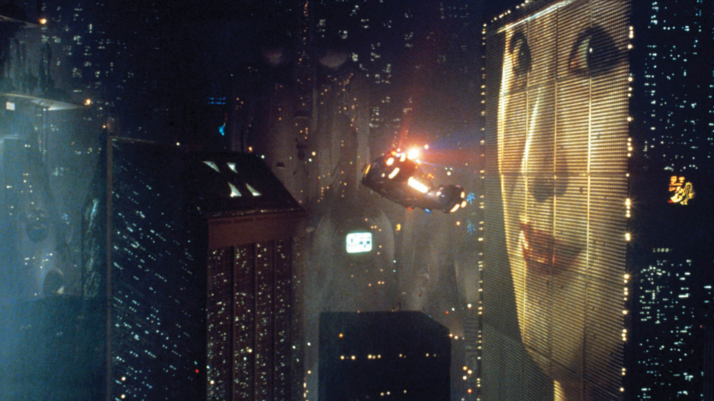
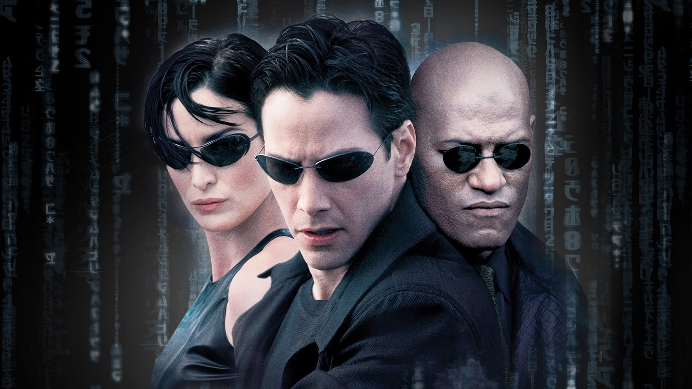

Blade Runner (1982)
Directed By: Ridley Scott
Set in a dystopian future, this movie explores the life of Rick Deckard, a "blade runner" who hunts down bioengineered beings known as replicants.
The film's stunning visuals and groundbreaking special effects create a hauntingly beautiful depiction of a futuristic Los Angeles.
It delves into profound themes like humanity, identity, and the ethics of artificial intelligence.
The noir-like atmosphere combined with Vangelis's mesmerizing score adds to the film's unique and immersive experience.

The Matrix (1999)
Directed By: The Wachowskis
The story follows Neo, a hacker who discovers that reality as he knows it is a simulated construct controlled by sentient machines.
The film introduces mind-bending concepts about reality, perception, and freedom.
The revolutionary special effects, including "bullet time," set a new standard for action choreography in cinema.
It combines thrilling action with deep philosophical questions, making it both entertaining and thought-provoking.

High Life (2018)
Directed By: Claire Denis
Monte and his infant daughter are the last survivors of a dangerous mission to the outer reaches of the solar system. As the crew confronts cosmic isolation, they must find a way to survive.
The film delves into complex themes of isolation, human nature, and survival, offering a profound psychological exploration.
Claire Denis brings a unique and artistic vision to the sci-fi genre, creating a haunting and meditative atmosphere.
Robert Pattinson and Juliette Binoche deliver compelling performances that add emotional depth and complexity to the story.